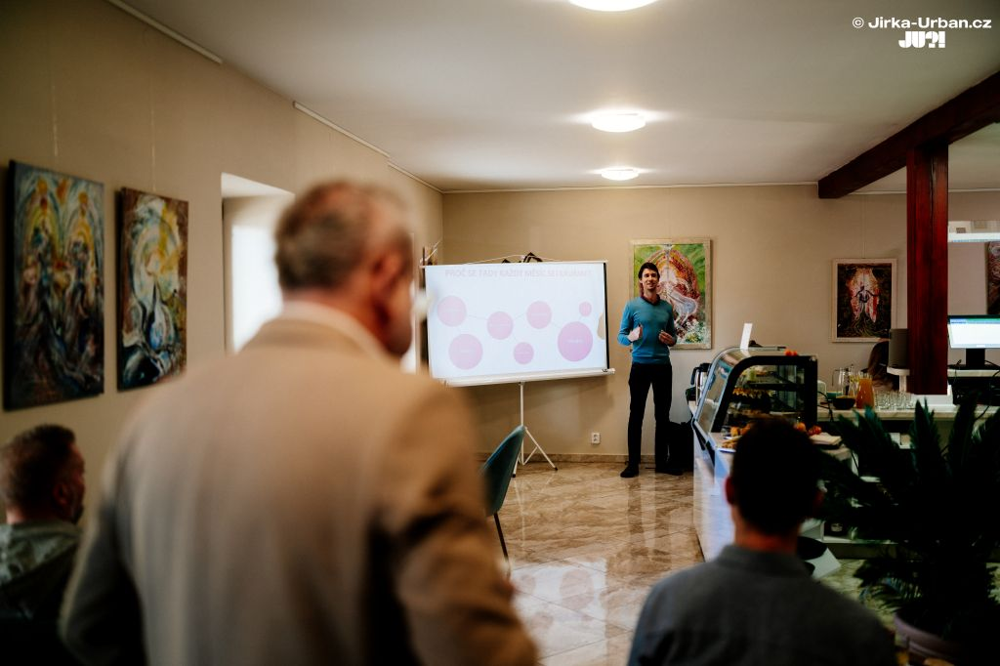

Káva, vize a skvÄ›lĂ© jĂdlo: Reportáž z BforB setkánĂ v Laskala CafĂ© Tišnov
Ve ÄŤtvrtek 6. listopadu 2025 se tišnovskĂ˝ networkingovĂ˝ klub Business for Breakfast sešel na svĂ© pravidelnĂ© snĂdani, tentokrát v mimořádnĂ©m prostĹ™edĂ. Hostila nás totiĹľ letos znovuotevĹ™ená kavárna Laskala CafĂ© v TišnovÄ›, do kterĂ© jsme se okamĹľitÄ› zamilovali.
AtmosfĂ©ra byla od samĂ©ho rána neuvěřitelnÄ› přátelská a inspirativnĂ. Majitelka kavárny, Jitka JirkĹŻ, a jejĂ tĂ˝m pro nás pĹ™ipravily naprosto bájeÄŤnĂ© jĂdlo, kterĂ© jen podtrhlo celkovĂ˝ dojem. Káva vonÄ›la, diskuse proudily a mezi ÄŤleny a 7 novĂ˝mi hosty vznikala dalšà zajĂmavá propojenĂ a rodila se nekoneÄŤná inspirace.

Nejen snĂdanÄ›, ale i vize do budoucna
Toto setkánĂ ale nebylo jen o rannĂm networkingu. Po oficiálnà části jsme se s ÄŤleny klubu sešli na "byznys setkánĂ", kde jsme Ĺ™ešili dalšà rozvoj a směřovánĂ našà tišnovskĂ© skupiny. Jedno z ĂşstĹ™ednĂch tĂ©mat byla i pĹ™Ăprava velkolepĂ© novoroÄŤnĂ networkingovĂ© párty.
Našim plánem teÄŹ je pĹ™edevšĂm uspořádat novoroÄŤnĂ párty 8. ledna 2026 a propojit na nĂ nejen mĂstnĂ podnikatele, ale i zástupce mÄ›sta Tišnov a sousednĂ KuĹ™imi. Chceme vytvoĹ™it silnou B2B komunitu v celĂ©m regionu.
Pro pĹ™edstavu, jaká skvÄ›lá atmosfĂ©ra na našich akcĂch panuje, se mĹŻĹľete podĂvat na fotky z letošnĂho novoroÄŤnĂho setkánĂ, kterĂ© zachytil fenomenálnĂ Jirka Urban.
PropojenĂ s MAS a rozvoj regionu
DĹŻleĹľitou součástĂ plánovanĂ© akce bude takĂ© pĹ™edstavenĂ moĹľnostĂ, kterĂ© podnikatelĹŻm nabĂzĂ MAS Brána VysoÄŤiny. Chceme ukázat, jakĂ© konkrĂ©tnĂ dotaÄŤnĂ a podpĹŻrnĂ© programy mohou firmy vyuĹľĂt pro svĹŻj rĹŻst. NašĂm cĂlem je aktivnÄ› zapojit i podnikatele z KuĹ™imi a vytvoĹ™it tak silnĂ˝ B2B komunitnĂ projekt, kterĂ˝ pĹ™esahuje hranice jednoho mÄ›sta.
ListopadovĂ© setkánĂ v Laskale tak nebylo jen dalšĂm v Ĺ™adÄ›, ale skuteÄŤnĂ˝m restartem s novou energiĂ a jasnĂ˝mi plány. DÄ›kujeme Jitce JirkĹŻ za skvÄ›lĂ© zázemĂ a všem hostĹŻm i ÄŤlenĹŻm za inspirativnĂ dopoledne!
Pokud byste chtÄ›li navnĂmat, jak probĂhajĂ i dalšà naše akce, skvÄ›lou ochutnávku a dalšà fotky najdete na Facebook profilu BforB Tišnov. A nĂĹľe je malá galerie pĹ™Ămo z tohoto vydaĹ™enĂ©ho rána: